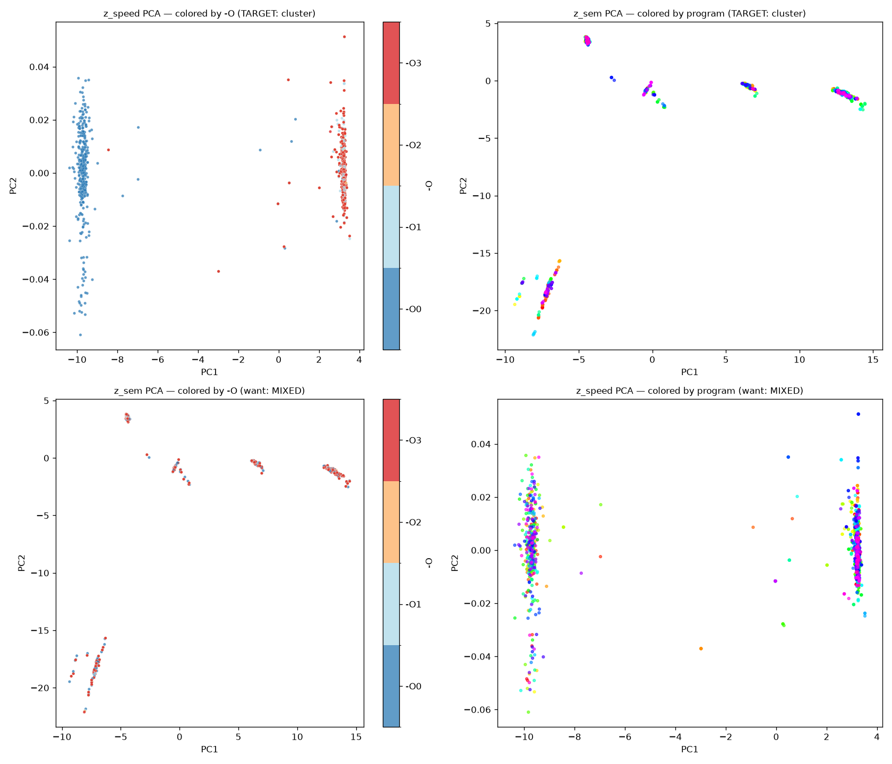

An AI that learns to optimize machine code — by understanding how data actually flows through it, not by reading text. Built on JEPA, a self-supervised world-model approach. To our knowledge, the first applied to assembly.
Trading engines. Physics simulations. Databases. There, every cycle of speed and every byte of memory matters — and one thing is never negotiable: the code must be correct, right down to the metal.
Performance isn't decided in your source code.
It's decided in the assembly the compiler produces.
So why not just let the compiler handle it? That's exactly the problem.
The structure, not the text. We turn each block of assembly into a graph of data flow — what depends on what. That is the real structure that drives performance. Unlike an LLM, we never act on text.
A bet on how it learns. On top of that graph we use JEPA — Yann LeCun's self-supervised world-model approach, just beginning to be explored in new domains (e.g. biology). To our knowledge, no one has applied it to assembly. We're the first.
The model splits its understanding in two: what the code does (zsem) and its optimization profile (zspeed) — learned with zero manual labels.
| zsem = what the code does | gap 0.89 |
| …ignores optimization level | silhouette ≈ 0 ✓ |
| zspeed = optimization profile | isolated axis |
| …ignores the program | silhouette −0.91 ✓ |
Self-supervised, no labels · ~8k ExeBench functions · ProgramML graphs · trained from scratch on one B200 GPU.

Effective rank of zsem, 3 → 72 of 96. The kind of rigor that machine-level correctness demands.
Immediate, irrefutable proof of value — converting open source into qualified inbound, the same viral motion that built GitGuardian.
A universal, AI-driven compiler.
The encoder is the foundational brick. The end state: take any source, in any language, and compile it optimally for any hardware — CPU, GPU, specialized chips. A world model that gets smarter with every program it sees.
Full pipeline (probe → cache → train → eval) reproduces from one command line.
First beat-O3 win.
Headroom proof.
Safety rail + moat.
We know exactly what's unproven. This is the plan to prove it.
Seeking pre-seed to take the encoder from proven disentanglement to a first measured speedup on real code.
‹ contact · team · the ask ›